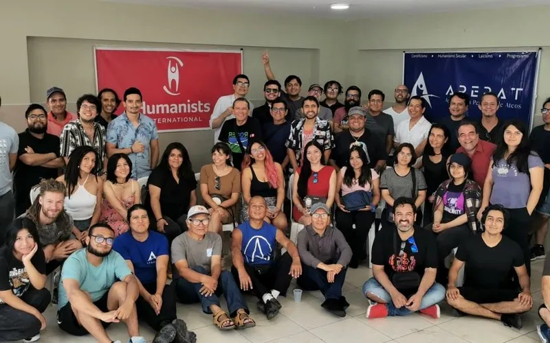

Humanismo laico: una forma de vivir con razón, libertad y humanidad
Una visión del mundo que encuentra en la capacidad humana de pensar, cuidar y construir un futuro compartido las bases de una vida con sentido.

¿Qué hace que una vida sea buena? ¿De dónde vienen nuestras ideas sobre lo justo y lo injusto? ¿Necesitamos creer en una fuerza sobrenatural para actuar con bondad, encontrar un propósito o sentir asombro ante el universo?
El humanismo laico parte de una convicción sencilla: los seres humanos podemos construir una vida ética, significativa y solidaria a partir de nuestras propias capacidades. La razón, la experiencia, la empatía y el conocimiento nos permiten comprender el mundo, tomar decisiones y asumir la responsabilidad por sus consecuencias. Para ello no necesitamos recurrir a mandatos sobrenaturales ni aceptar verdades que estén fuera del alcance de la crítica.
Esta visión no se limita a negar la existencia de dioses. Propone una manera positiva de relacionarnos con los demás y con el mundo: reconocer la dignidad de cada persona, proteger la libertad, reducir el sufrimiento y crear las condiciones para que todos podamos desarrollar nuestras capacidades.
Una tradición con raíces en muchas culturas
A veces se presenta el humanismo como un producto exclusivo de la Ilustración europea. Su historia es bastante más amplia. A lo largo de distintas épocas y sociedades han surgido corrientes de pensamiento que han buscado explicar la realidad mediante la observación y la razón, y que han situado la conducta humana y el bienestar colectivo en el centro de sus preocupaciones.
En la antigua Grecia, Protágoras cuestionó las explicaciones tradicionales sobre los dioses y destacó la importancia de la experiencia humana. En la India, la escuela filosófica Charvaka defendió una visión materialista y rechazó la autoridad de los textos sagrados. En China, el pensamiento de Confucio y Mencio puso el acento en la benevolencia, la responsabilidad y la armonía en las relaciones humanas. En distintas tradiciones africanas, la filosofía Ubuntu ha expresado una idea de la persona profundamente vinculada a su comunidad: nuestra humanidad también se construye en relación con los demás.
Estas corrientes no son idénticas ni deben confundirse con el humanismo secular contemporáneo. Sin embargo, muestran que la reflexión ética, la búsqueda de conocimiento y la preocupación por la vida en común no pertenecen a una sola civilización ni dependen necesariamente de una religión.
La historia moderna del humanismo ha reunido parte de esas inquietudes en una visión compartida. Un referente central es la Declaración de Ámsterdam, adoptada originalmente en 1952 por el movimiento humanista internacional y revisada en 2002 y 2022. La versión vigente fue aprobada por los miembros de Humanists International, la organización que representa al movimiento humanista a escala global.
La declaración resume el humanismo moderno en cuatro grandes compromisos: procurar una vida ética, utilizar la razón, buscar la realización personal y ofrecer una fuente de sentido compatible con la libertad de pensamiento y la diversidad humana. No es un código cerrado ni una doctrina que pretenda resolver de antemano todas las preguntas. Es una orientación común para personas y organizaciones que comparten esos principios.
La ética no necesita una autoridad sobrenatural
Una de las objeciones habituales al humanismo laico sostiene que, sin Dios, no habría fundamento para distinguir el bien del mal. Según esta idea, la moral dependería de mandatos divinos y, sin ellos, cualquier conducta podría justificarse.
El humanismo propone otra respuesta. Nuestra capacidad de preocuparnos por los demás tiene raíces en la propia vida social. La empatía, la cooperación, el cuidado de quienes sufren y el sentido de equidad aparecen en la historia evolutiva de los seres humanos y en el comportamiento de otros animales sociales. La investigación del primatólogo Frans de Waal, por ejemplo, ha contribuido a mostrar que algunas formas de empatía y cooperación tienen antecedentes evolutivos anteriores a las religiones organizadas.
Esto no significa que la biología pueda dictar por sí sola cómo debemos vivir. Saber que una conducta tiene un origen evolutivo no demuestra que sea moralmente correcta. La ética exige reflexión: debemos evaluar nuestras acciones, considerar sus efectos y preguntarnos qué consecuencias tienen para la vida de los demás.
Para el humanismo, una decisión moral merece ser examinada a partir de criterios como el daño que puede causar, el respeto por la autonomía, la justicia y el bienestar de las personas afectadas. La compasión aporta sensibilidad ante el sufrimiento; la razón ayuda a revisar nuestros prejuicios y a considerar a quienes quedan fuera de nuestro círculo cercano.
La moral no necesita una recompensa en otra vida ni el temor a un castigo sobrenatural. Podemos ayudar a alguien porque reconocemos su sufrimiento, porque valoramos su bienestar y porque entendemos que nuestras vidas están relacionadas. La responsabilidad ética nace de nuestra condición de seres capaces de comprender que nuestras decisiones afectan a otros.
La razón y la ciencia como herramientas para comprender el mundo
El humanismo concede un lugar central a la razón y a la investigación científica. Esto no significa pensar que la ciencia tiene respuesta inmediata para cualquier pregunta o que puede resolver por sí sola todos los dilemas humanos. Significa reconocer que, cuando queremos conocer la realidad, necesitamos métodos que permitan contrastar afirmaciones, corregir errores y revisar nuestras conclusiones.
La Declaración de Ámsterdam expresa una idea especialmente importante: la ciencia proporciona medios y conocimientos, pero los valores humanos deben orientar los fines. La tecnología puede ampliar nuestras posibilidades, aunque su utilidad depende de cómo decidamos emplearla y de quiénes se beneficien de sus avances.
Esta distinción importa en debates actuales sobre inteligencia artificial, biotecnología, medioambiente y salud. No basta con preguntar qué podemos hacer. También debemos preguntarnos para qué, con qué consecuencias y bajo qué condiciones. El progreso científico necesita responsabilidad social y criterios éticos.
La actitud humanista tampoco considera que una persona o institución sea infalible. El conocimiento avanza mediante observación, discusión y revisión. Cambiar de opinión ante mejores evidencias no es una debilidad: es una muestra de honestidad intelectual.
La dignidad y la libertad de cada persona
El humanismo parte del valor de cada individuo. La dignidad no depende de la religión que profese, de su origen, de su identidad, de su posición económica ni de su utilidad para la sociedad. Cada persona debe poder desarrollar su vida y tomar decisiones sobre ella, siempre respetando los derechos de los demás.
Este principio tiene consecuencias concretas. Se expresa en la defensa de la libertad de conciencia, la igualdad ante la ley, la autonomía personal, los derechos sexuales y reproductivos, la no discriminación y el derecho a recibir educación basada en conocimientos contrastables.
También invita a examinar críticamente las normas y costumbres que restringen la libertad de las personas sin una justificación que pueda ser discutida públicamente. Una tradición, por antigua que sea, no queda exenta de evaluación. Las leyes y las instituciones deben poder justificarse mediante razones que respeten la dignidad y los derechos de todos.
El humanismo tampoco reduce la libertad a un asunto individual. Vivimos en sociedades interdependientes. Nuestras decisiones tienen efectos sobre otras personas, sobre las generaciones futuras y sobre el entorno natural del que formamos parte. La responsabilidad hacia los demás es parte de una libertad ejercida con conciencia.
Una vida con sentido, aquí y ahora
La ausencia de creencias sobrenaturales no obliga a vivir sin propósito. El sentido puede surgir de los vínculos que construimos, de las personas que queremos, del conocimiento que buscamos, del trabajo que hacemos, de la creatividad y de nuestra participación en proyectos colectivos.
El filósofo Martin Hägglund ha desarrollado una reflexión interesante sobre este asunto: precisamente porque nuestras vidas y nuestros vínculos son finitos, lo que hacemos con ellos importa. El tiempo compartido con alguien, la posibilidad de ayudar a otra persona o el esfuerzo por mejorar una situación adquieren valor porque no son experiencias que podamos dar por garantizadas para siempre.
Esta perspectiva también permite afrontar la muerte sin recurrir a explicaciones sobrenaturales. La pérdida de una persona querida es real y merece ser reconocida como tal. Podemos mantener vivo su recuerdo a través de las historias que compartimos, los valores que nos transmitió y la huella que dejó en quienes la conocieron.
Por eso las ceremonias humanistas tienen un lugar importante en muchas comunidades. Bodas, bienvenidas a la vida y funerales pueden celebrarse mediante rituales significativos sin referencias religiosas. Su valor está en reunir a las personas, reconocer una transición y expresar afecto, compromiso y memoria de una manera coherente con las convicciones de quienes participan.
El asombro tampoco necesita una explicación sobrenatural. Conocer la historia del universo, comprender la evolución de la vida o contemplar la inmensidad del cielo puede despertar una profunda sensación de admiración. La curiosidad científica y la sensibilidad artística nos permiten encontrar belleza y significado en el mundo que compartimos.
Un humanismo abierto y comprometido con los demás
El humanismo laico no pretende convertirse en una nueva ortodoxia ni exige que todas las personas adopten una misma visión del mundo. La Declaración de Ámsterdam reconoce expresamente la importancia del intercambio libre de ideas y la cooperación con personas de distintas creencias que compartan valores como la dignidad, la libertad, la justicia y el bienestar humano.
Esta apertura es importante. En sociedades diversas, las diferencias de convicción forman parte de la vida común. El desafío consiste en encontrar principios que permitan convivir, debatir y trabajar juntos sin imponer una doctrina particular. Una persona religiosa puede coincidir con una persona no creyente en la defensa de los derechos humanos, la protección del medioambiente o la lucha contra la pobreza. Esas coincidencias permiten construir alianzas sin ocultar las diferencias.
El movimiento humanista internacional trabaja precisamente en ese espacio. Humanists International reúne organizaciones y personas de numerosos países, promueve los valores humanistas en instituciones internacionales, defiende a quienes sufren persecución por sus convicciones y apoya el desarrollo de comunidades humanistas en distintas regiones. Su trabajo muestra que el humanismo también es una práctica colectiva: necesita organizaciones, redes de apoyo y personas dispuestas a convertir sus principios en acciones.
El humanismo también se encuentra en Lima
En agosto de 2027, Lima será el punto de encuentro de esa comunidad internacional. El World Humanist Congress 2027, organizado por Humanists International, se celebrará del 20 al 22 de agosto y reunirá a humanistas de distintas partes del mundo para compartir ideas, experiencias y proyectos en torno a la razón, la ética y los derechos humanos.
Para quienes sienten curiosidad por el humanismo o desean conocer a personas y organizaciones que trabajan desde esta perspectiva, será una oportunidad excepcional para entrar en contacto con un movimiento diverso y global. También permitirá descubrir cómo se expresan los valores humanistas en contextos culturales y sociales muy diferentes.
Desde la Asociación Peruana de Ateos (APERAT), invitamos a quienes compartan estas inquietudes —y también a quienes quieran conocerlas mejor— a participar en este encuentro. El humanismo se construye mediante la reflexión, pero también a través del diálogo y la colaboración entre personas.
En definitiva, el humanismo laico propone asumir nuestra responsabilidad sobre la vida que tenemos y el mundo que compartimos. Nos invita a pensar con libertad, actuar con empatía, aprender de nuestros errores y procurar que las oportunidades de vivir con dignidad estén al alcance de todos. No ofrece respuestas definitivas sobre el universo ni promete una existencia libre de dificultades. Ofrece algo más cercano y exigente: la posibilidad de construir, juntos, una vida con sentido.
Conoce más sobre el humanismo y participa en el World Humanist Congress 2027 en Lima, del 20 al 22 de agosto.